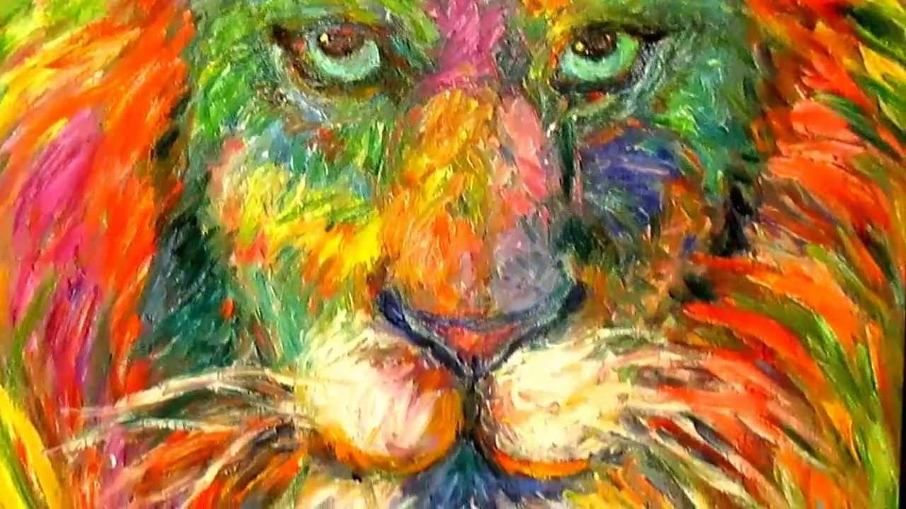
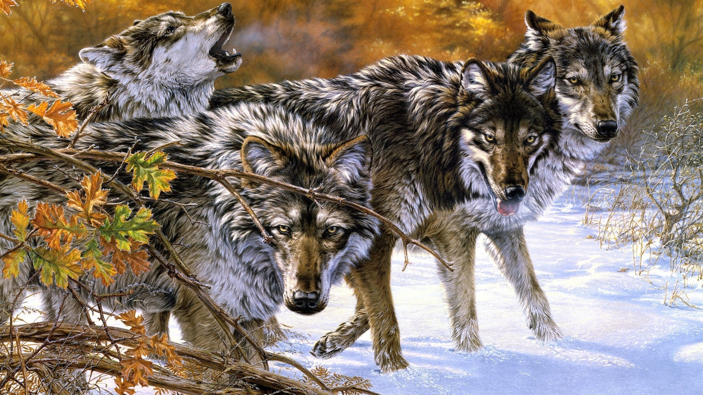

Душный клуб, полтос народа Дым, хоть вешай в зале труп На танцполе запах крови Серкл пит среди акул Шишкин Лес, косяк в руке Голос сорван, шкуры в шоке Клуб в огне, я в обороне Прыгну в тачку, чиллюсь дома Нахуй рэп и нахуй лоли Теккен 3, я снова роллю Теккен 3, на танцполе.…
Read More

За спиной сталь и шестое чувство По дебрям мрака бесшумно мчусь я Кровь холодна, пощада чужда Взрываю бланты, вокруг пустошь Двое в зале, один на крыше Рожден незрячим, умеет слышать Ступаю тихо, пылает Свишер Движенье плавно, стальной вихрь Я слышал твое дыханье (дыханье) И в луже крови охранник (охранник) Рассвет, запачканный кровью Я продолжу путь утром ранним (что?) Он подступился ко мне (ко мне) Смотри, как он станет пищей (пищей) Для моей стали в огне Что голодна, как будто бы хищник И не видя мир, я вижу больше, чем вы Имею то, чем не владеют чины В дымке багровой фигура слепого Что себя позади не оставит в живых Когда блант догорит, лягут те дикари Опрометчиво мысля, что могут творить Опрометчиво мысля, что могут парить Превосходный убийца, восставший в пыли, тварь (скрт)

О О, черт Бэнго А [Куплет 1: Jeembo] В городе много дебилов Забитый пэк, но не дилла В руке дымит не кадило Джей-Джей знает, кто играет в это криво Долбаный килла, в чем твоя сила? Что в твоем кейсе, что в твоем кейсе? Найки летят, это Невские экспрессии Как так? Пена на ртах, мои псы на кортах Суки роллят сорта, стилю нету конца в этом кейсе Мне так идут эти песни До дыр зацелованный крестик И Джимбо умрет, но он скоро воскреснет И бомбы на плейсе, но на людях плесень Догеры в хейзе, мои легкие в кейсе Бланты жирнее, чем Блейзи И кто-то умрет в этом каменном лесе Сука в замесе, сука на стрессе Кто-то умрет, кто-то умрет Кто-то умрет в этом каменном лесе Кто-то умрет, кто-то умрет Джимбо умрет, но он скоро воскреснет